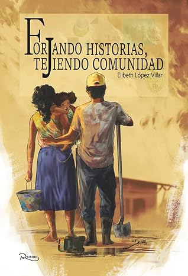

Libros
En esta sección encontrarás una cuidada selección de libros relacionados con la historia, cultura y patrimonio del Barrio Las Américas, escritos por expertos en la materia y que ofrecen una visión profunda de diversos aspectos del barrio, desde su fundación hasta su evolución a lo largo del tiempo. Estas obras abarcan temas como la arquitectura histórica, las tradiciones culturales, las historias de sus habitantes y los eventos significativos que han moldeado su identidad, brindando a los lectores una comprensión enriquecedora de su importancia en la historia local.
FORJANDO HISTORIA, TEJIENDO COMUNIDAD
En el Museo Las Américas creemos que la memoria no solo se conserva: se construye colectivamente. Por eso presentamos el libro Forjando historias, tejiendo comunidad, una obra que recoge la memoria viva del barrio, sus procesos organizativos, las luchas sociales, el desarrollo del acueducto comunitario y las voces de quienes han hecho posible su transformación.
Este libro es el resultado de un ejercicio profundo de reconstrucción histórica y comunitaria. A través de relatos, testimonios y reflexiones, la obra destaca el papel de los fundadores, líderes sociales, mujeres, jóvenes y víctimas de la violencia que, con resiliencia y compromiso, han tejido el presente del territorio.
Más que una publicación, es un homenaje a la identidad barrial y una invitación a reconocer el valor de la organización comunitaria como motor de cambio social.

Fuente: Foto tomada de la pagina de amazon del libro. Descripción: Se observa el libro Forjando Historia, Tejiendo ComunidadAdquiérelo Aquí:
- Oficina del CEAA - Barrio Las Américas, Villavicencio.
- En línea: Comprar en Amazon el libro Forjando Historia, Tejiendo Comunidad
- En Europa: Comprar en Rubric el libro Forjando Historia, Tejiendo Comunidad
🙏 Gracias por creer en nuestra comunidad y en la importancia de preservar nuestra historia. Tu apoyo hace posible que el Museo Las Américas siga siendo un espacio vivo para todos.